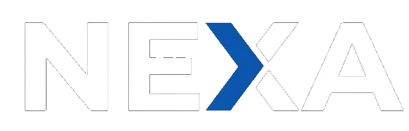

ASSISTENTE INTELIGENTE EM AÇÃO
Sua câmera com IA que traduz sua intenção estética.
A Nexa conecta o seu desejo criativo aos parâmetros matemáticos da fotografia, otimizando iluminação, contraste, saturação e matrizes RGB em segundos.

ASSISTENTE INTELIGENTE EM AÇÃO
A Nexa conecta o seu desejo criativo aos parâmetros matemáticos da fotografia, otimizando iluminação, contraste, saturação e matrizes RGB em segundos.

Uma solução unificada que conecta todos os pilares do ecossistema educacional e tecnológico.
Espaço dedicado para expor portfólios, obter feedback direto de mentores e se conectar com oportunidades de mercado.
Ferramenta centralizada para acompanhar a evolução dos projetos, estruturar avaliações e incentivar a aplicação prática de conceitos teóricos.
Canal direto de inovação aberta para lançar desafios de negócios, recrutar talentos mapeados e financiar soluções tecnológicas viáveis.